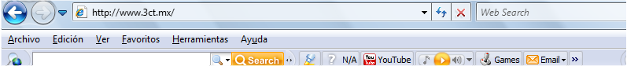

OBJETIVO DE INTERNET
El alumno será capaz de enviar correos masivos con las características de copias y copias ocultas, se le enseñaran los diferentes navegadores para obtener de una u otra manera la información que le soliciten.
Podrá agregar sus páginas a la opción de favoritos, limpiara el historial de su computadora, aprenderá a personalizar Internet para trabajar de una manera amena.
Aprenderá a descargar programas gratuitos e imágenes con una calidad excelente para trabajos en otros programas como Power Point, Photoshop o Illustrator entre otros.